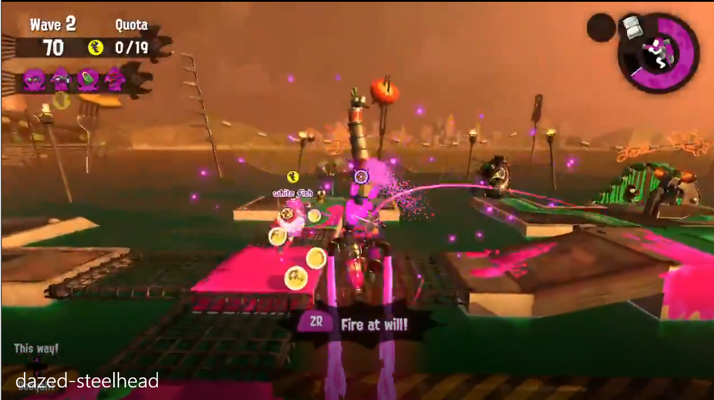
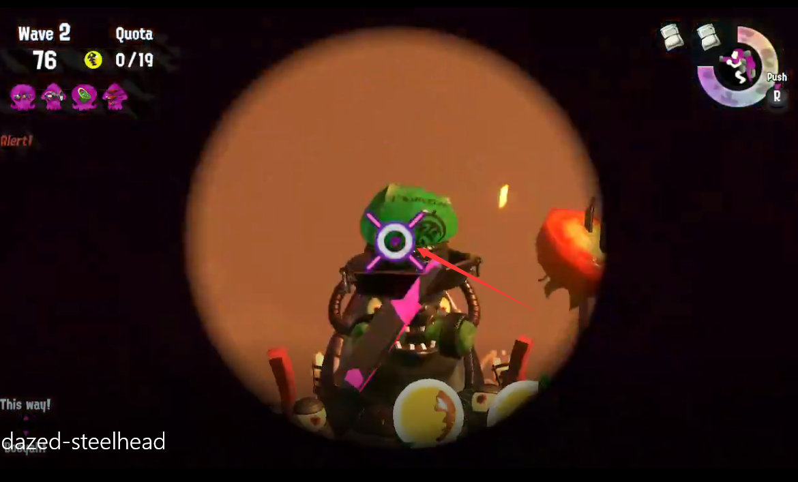

<a href='https://woflow.github.io/salmonrun/'>回到首页</a>

<div>
<h3>发呆的绿帽附带飞机用法</h3>
<video width="640" controls>
  <source src="dazed-steelhead.mp4" type="video/mp4">
  Your browser does not support the video tag.
</video>
</div>
<br/>
<div>有准星了说明能打中</div>
<div>觉得狙用得不好的可以多稳一会，等准心出现了再打</div>
<div>飞机也是，飞近了看到准心了再开炮，其他时候可以打打路上的花花草草胖哥</div>

<br/>
<h3>飞机打塔准心</h3>

<br/>
<h3>狙击打绿帽准心</h3>



<br/>
<h3>背包用法</h3>
<video width="640" controls>
  <source src="./背包用法.mp4" type="video/mp4">
  Your browser does not support the video tag.
</video>


<br/>
<h3>大坝码头的打塔逃命路线</h3>
<video width="640" controls>
  <source src="./大坝码头的打塔逃命路线.mp4" type="video/mp4">
  Your browser does not support the video tag.
</video>

<br/>
<h3>集落正面的垃圾桶丢法</h3>
<video width="640" controls>
  <source src="./垃圾桶丢法.mp4" type="video/mp4">
  Your browser does not support the video tag.
</video>


